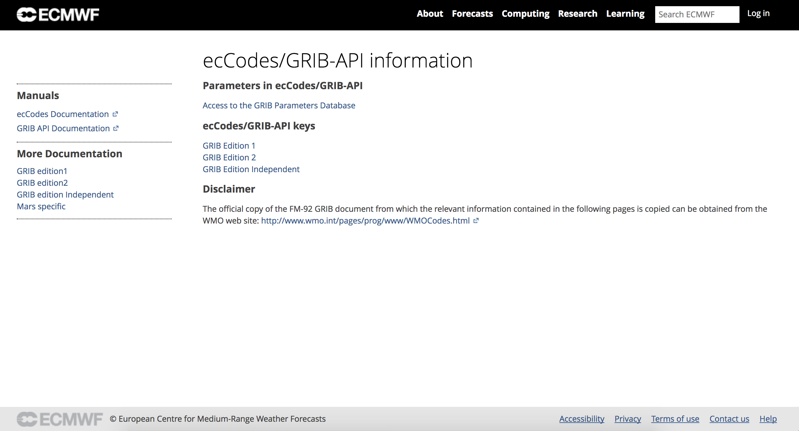

2. GRIB 工具
ecCodes 命令行工具
简介
ecCodes 工具是一系列命令行程序的集合，用于 GRIB 数据的交互处理和批处理。 为大部分通用的 GRIB 数据操作提供方便且经过测试的解决方案。
使用这些工具可以节省编写新代码的时间，从而提高效率。
考虑使用 ecCodes 工具替代自己编写的程序。
这些工具提供通用的选项集，可以很方便地将同样的参数应用到不同的工具上。
建议尽可能使用命令行工具。
通用 ecCodes 工具
获取 ecCodes 安装信息：
codes_info
命令输出如下
统计 GRIB 和 BUFR 消息：
codes_count
命令输出结果：
$ codes_count gmf.gra.2018010300000.grb2
761
GRIB 工具简介
所有的工具使用通用的语法
grib_<tool> [options] grib_file [grib_file] ... [output_grib]
提供如下的工具：
- 统计 GRIB 文件中的消息数
- grib_count
- 查看 GRIB 文件内容和比较 GRIB 文件内容
- grib_ls
- grib_dump
- grib_get
- grib_get_data
- grib_compare
- 拷贝消息
- grib_copy
- 修改 GRIB 消息内容
- grib_set
- grib_filter
- 将 GRIB 文件转码为 netCDF 格式
- grib_to_netcdf
获取帮助信息
工具的帮助信息
每个工具都提供 UNIX man 风格的帮助信息，通过运行不带任务参数和输入文件的命令显示。
例如 grib_dump 的帮助信息如下：
NAME grib_dump
DESCRIPTION
Dump the content of a grib file in different formats.
USAGE
grib_dump [options] grib_file grib_file ...
OPTIONS
-O Octet mode. WMO documentation style dump.
-D Debug mode.
-d Print all data values.
-j JSON mode (JavaScript Object Notation).
...
ecCodes 文档
ecCodes 手册：
https://software.ecmwf.int/wiki/display/ECC/ecCodes+Home
GRIB 工具文档：
https://software.ecmwf.int/wiki/display/ECC/GRIB+tools
包括如何使用工具的例子。
ecCodes 软件下载地址：
https://software.ecmwf.int/wiki/display/ECC/Releases
ecCodes keys 和 GRIB 参数
GRIB 中的参数
- GRIB 参数数据库：http://apps.ecmwf.int/codes/grib/param-db
GRIB keys
- GRIB 版本1：http://apps.ecmwf.int/codes/grib/format/grib1/
- GRIB 版本2：http://apps.ecmwf.int/codes/grib/format/grib2/
- GRIB 版本无关：http://apps.ecmwf.int/codes/grib/format/edition-independent/
免责声明：
包含上述相关信息的官方 FM-92 GRIB 文档可以从 WMO 的官方网站获取：
http://www.wmo.int/pages/prog/www/WMOCodes.html
GRIB keys
查看版本无关、GRIB 1 和 GRIB 2 的 keys，请访问：
http://apps.ecmwf.int/codes/grib/
请优先使用版本无关的key。

参数数据库
参数数据库保存 ecCodes 可以识别的所有参数的 GRIB 版本1和版本2的信息，以及部分参数的 NetCDF 编码信息。
数据库可以通过以下网址访问：
http://apps.ecmwf.int/codes/grib/param-db